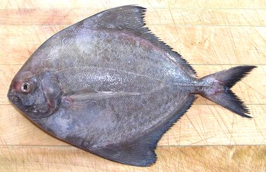

Black Pomfret

[C. Parastromateus niger]
Actually not a Pomfret but a Pompano (the two families look a lot alike),
this is an Indo-West Pacific fish ranging from the north coast of Australia
to southern Japan and from Africa to Borneo. It can grow to 29
inches but the photo specimen was 10-1/2 inches and weighed just over
15 ounces, toward the large size seen in the markets. Black pomfret vary
in darkness - the photo specimen is darker than many. Though highly
commercial this is a fast breeding fish and not considered threatened.
This is the fish we feature on our
Broiling Fish page.
More on Pompanos.
This delicious fish provides light colored flesh with a very pleasant
flavor - mild but not bland. There is a dark strip under the skin but it
is not noticeably stronger in flavor than the light flesh. The flesh holds
together very well for all forms of wet cooking and pan frying but flakes
easily on the plate. Because the skin shrinks little it is an excellent
fish for baking or steaming whole or pan dressed. It is a very good shape
for cooking whole.
Buying:
These fish are very commonly available in Asian
markets. They come in two basic size groups, about 8 to 11 inches and 5 to
7 inches. The larger are usually on ice or frozen packed in foam trays,
the smaller frozen in bags.
Scales:
This fish is completely covered with tiny scales
with moderate adhesion. They scrape off fairly easily with only moderate
flying around.
Cleaning:
this fish is a little different than most
with hard keels, because the keel doesn't go all the way forward. If
you don't intend to cook head-on you should cut the head off immediately
(make cuts around the collar, then cut the backbone from the side) to
make cleaning easy.
If, as is often the case, you wish to cook the fish head-on, this can
be done in such a way as to have a fish with two good sides. Make a
cut from the vent to under the chin as for
Cleaning and Filleting a Round Fish. Then
pull out the gills using your long nose pliers. This will free up the
innards enough so you can hook them partially out with a finger and then all the
way out with the pliers. There will be a little bit of soft stuff left in
the cavity aft of the vent on each side of the keel, but you can scoop that
out with a finger.
Fillet:
This is an easy fish to fillet, having a
coherent and easy to follow fin/bone structure, Outline the fillet by
cutting through the skin top and bottom. Cut down to the backbone from
front to tail, then over the tail and work forward. When you get to the
rib cage you can pretty much pull the fillet off the ribs, or cut them
from the backbone with kitchen shears and pull them from the fillet. If
you will be using fillets skin-on, cut away the hard skutes, just for
the straight part at the tail. There are long centerline pin bones for
the length of the body cavity that need to be pulled. farther back you
can still feel them but they'll pretty much disappear in cooking,
For details see our Cleaning and Filleting
Deep Bodied Fish page.
Skin:
Taste of the skin is stronger than that of the
flesh but still fairly mild, and the skin has almost no shrink. This
makes it an excellent fish for pan frying skin-on and for baking,
poaching or steaming whole. A skin-on fillet will curl noticeably when
poached but not nearly so much as most fish. The skin can be removed by
the usual long knife and cutting board
Method, but with more care and
effort than with most fish, because the skin adheres hard to the
flesh. The knife blade must be held at a very shallow angle, almost
horizontal to avoid cutting the skin, but it will come off with no
flesh at all if you do it right.
Yield:
Three fish of almost the same size and averaging
10-1/4 inches long weighed 43.13 ounces. Yield was 23.37 ounces (54%)
skin-on and 20.25 ounces (47%) skin-off. A 14 inch 1 pound 10-3/8 ounce
fish yielded only about 1% more, but smaller fish will yield a slightly
lower percentage.
Stock:
Heads (gills removed and split), bones, fins and
skins make an excellent mild almost clear stock with almost no oil -
one of the best for soup. Do remove the little oil there is with your
gravy separator. For details see our
Fish Stock page.
sf_pombz 060503 r 110813 - www.clovegarden.com
©Andrew Grygus - agryg@clovegarden.com - Photos on this
page not otherwise credited are © cg1 -
Linking to and non-commercial use of this page permitted